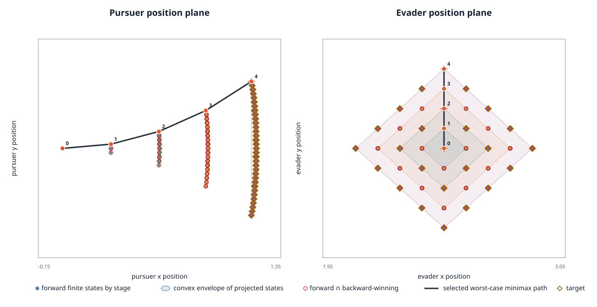

This report applies our finite-feedback reachability and causal minimax solvers to a source-derived pursuit-evasion game. Its physical state is five-dimensional: pursuer position and heading, plus evader position. Source time is represented by the stage index.

| Forward graph states by stage | 1, 12, 81, 400, 1650 |
|---|---|
| First robust terminal capture (distance ≤ 7.8) | 4 decisions (0.4 s) |
| Finite causal minimax terminal separation | 7.778040784 |
| Selected pursuer turn-rate / evader heading path | u=1, v=1.57 → u=1, v=1.57 → u=1, v=1.57 → u=1, v=1.57 |
| Independent replay | verified: 2144 states and 5928 transition cells |
The pinned source state is (time, pursuer_x, pursuer_y, pursuer_heading, evader_x, evader_y). The pursuer travels at speed 3 with bounded turn rate u ∈ [-1,1]; the evader travels at speed 1 with heading v ∈ [0,2π]. Both use 0.1-second decisions and ten held-action RK4 substeps per decision. The source returns positive terminal Euclidean separation but does not specify separate payoff signs for the two agents.
This pilot uses the source default initial state, but shortens the horizon from 4.0 seconds to 0.4 seconds and samples the continuous actions as u ∈ {-1,0,1} and four cardinal evader headings. The capture set is an explicit analysis choice: terminal separation ≤ 7.8. The finite causal solver lets the evader observe the current pursuer turn rate before responding. The zero-sum interpretation (pursuer minimizes, evader maximizes) is an explicit analysis assumption, as are the finite actions and sequential response. The results describe this quantized finite game and do not reproduce continuous-action RL training or establish continuous-game optimality.
Source: HomicidalChauffeur at pinned commit, source blob f770a5c81c363ba628c987ee70f84af483c81b10, Apache-2.0 at that commit. Scenario SHA-256: 09c37ae48f8c1898b6f9eae0c046750f6b80e252787901fbe197865ae69a5fdb.
Configure with cmake -S . -B build/report -DCSL_BUILD_ENV717_REPORT=ON -DCMAKE_BUILD_TYPE=Release, build csl_env717_homicidal_chauffeur, then run python scripts/reports/env717/capture_homicidal_chauffeur.py build/report/csl_env717_homicidal_chauffeur --output reports/algorithm-results/env717-homicidal-chauffeur-v1. The checker independently rebuilds all RK4 transitions, verifies each reachable layer, recomputes backward winning sets and finite minimax values, and checks the selected worst-case trajectory.
No runtime or performance comparison was measured. Raw result · Figure data · Independent check · Capture metadata · Reproduction notes.